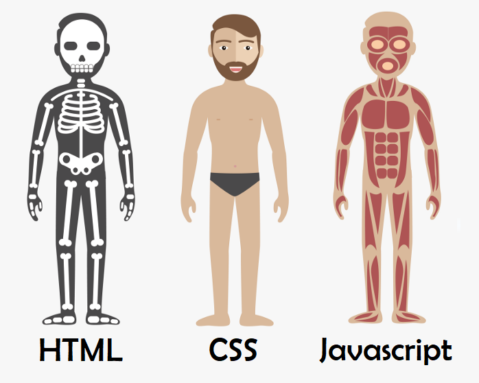

Plano de Ensino e Aprendizagem - SI401A
EMENTA
Elaboração de páginas web. Linguagens de marcação. Folhas de estilo. Javascript. Uso de linguagens de programação para geração dinâmica de páginas web. Uso de servidores web para armazenamento de sites. Atividades práticas de implementação de sistemas baseados nessas linguagens.
OBJETIVO
Colocar em perspectiva a programação para Web. Capacitar o aluno a compreender as principais linguagens de marcação e estilo. Capacitar o aluno a compreender e desenvolver scripts para execução em navegadores. Capacitar o aluno a compreender e desenvolver scripts para execução em servidores web.
FREQUÊNCIA MÍNIMA
75%
EXAME
Obrigatório se 2,5 ≤ M <6 (veja abaixo)
CARGA HORÁRIA TOTAL
60 horas
CARGA HORÁRIA - SALA DE AULA
60 horas (15 semanas)
HORÁRIO DE ATENDIMENTO AOS ALUNOS
Os horários de monitoria serão divulgados no Ambiente de Suporte ao Ensino (Moodle). Para reuniões com o professor, agendar via e-mail(endereço acima). Você deve colocar [SI401] no início docampo “Assunto” e se identificar.
Avaliação de Aprendizagem
A disciplina contará com um Projeto Final (a ser desenvolvido em grupo), dividido em três entregas parciais ao longo do semestre, e uma série de exercícios práticos de fixação (a serem desenvolvidos individualmente). Tais atividades serão utilizadas para avaliar a aprendizagem. No caso do Projeto Final, as notas individuais de cada aluno serão atribuídas conforme sua contribuição em cada etapa.
Método para Cálculo da Média Parcial
Seja:
P1 - Nota da primeira avaliação parcial do Projeto;
P2 - Nota da segunda avaliação parcial do Projeto;
P3 - Nota da terceira avaliação parcial do Projeto;
P - Nota final do Projeto;
T - Média dos exercícios práticos de fixação;
M - Média do aluno;
MFinal - Média final no semestre;
E - Nota do Exame;
A nota final do Projeto será dada por:
P = 0,10 ∙ P1 + 0,50 ∙ P2 + 0,40 ∙ P3;
A média do aluno será dada por:
M = 0,75 ∙ P + 0,25 ∙ T;
Média Parcial Mínima para Permissão de Exame
2,5
Média Parcial Mínima para Aprovação sem Exame
6,0
Método para Cálculo da Média Final
Se M < 2,5 (Reprovação Direta):
MFinal = M;
Se M ≥ 6,0 (Aprovação Direta):
MFinal = M;
Se 2,5 ≤ M < 6,0 (Exame Obrigatório):
MFinal = 0,6 ∙ M + 0,4 ∙ E;
Após o Exame, o aluno será considerado aprovado se:
MFinal ≥ 5,0.
Exame Substituirá Avaliação em Caso de Falta Abonada?
NÃO (Ver artigo 72 do Regimento Geral da Graduação).
CRONOGRAMA DAS AULAS (poderá sofrer ajustes ao longo do semestre)
| AULA | DATA | CONTEÚDO PROGRAMÁTICO |
|---|---|---|
| 1 | 02/08 |
Unidade 0: • Conteúdo: instruções gerais sobre a disciplina. • Objetivos: descrever como será o funcionamento da disciplina ao longo do semestre, mais especificamente o formato das aulas, o tema do Projeto Final, os critérios de avaliação e os plantões de dúvidas (monitorias). Unidade 1: • Conteúdo: visão geral sobre o funcionamento da web, com foco nas interações navegador-servidor, e contextualização da Programação para Web. • Objetivos: descrever em linhas gerais os passos executados a cada requisição feita por um navegador a um servidor, interpretar uma mensagem HTTP e apresentar o que será discutido nesse semestre dentro do contexto de Programação para a Web. |
| 2 | 09/08 |
Unidade 2: • Conteúdo: Hypertext Markup Language (HTML) e estrutura de documentos HTML (tags, declarações DOCTYPE, elementos HTML e atributos de elementos HTML). • Objetivos: entender o que é HTML e construir documentos que contenham os elementos obrigatórios definidos no padrão. Unidade 3: • Conteúdo: exemplos de elementos HTML (parágrafos, títulos, imagens, hyperlinks, tabelas, listas e iFrames). • Objetivos: construir documentos HTML que utilizem os elementos mais comuns. |
| 3 | 16/08 |
Unidade 4: • Conteúdo: o elemento HEAD de HTML. • Objetivos: construir documentos HTML que possuam o elemento obrigatório HEAD em sua estrutura. Unidade 5: • Conteúdo: layouts via HTML. • Objetivos: estruturar o conteúdo de documentos HTML em layouts bem definidos. |
| 4 | 23/08 |
Unidade 6: • Conteúdo: Cascade Style Sheets (CSS): definições, sintaxe e formas de utilização. • Objetivos: construir folhas de estilo que definam a aparência de um documento HTML e compreender a formatação que será aplicada a um elemento HTML por regras CSS já criadas. Unidade 7: • Conteúdo: Cascade Style Sheets (CSS): propriedades de fundo de tela, de texto e de fonte. • Objetivos: criar folhas de estilo que explorem as propriedades de fundo de tela, texto e de fonte de elementos HTML. |
| 5 | 30/08 |
Unidade 8: • Conteúdo: Cascade Style Sheets (CSS): propriedades abreviadas e o modelo de caixas (box model). • Objetivos: definição de layouts de páginas explorando o modelo de caixas de CSS. |
| 6 | 06/09 |
Unidade 9: • Conteúdo: programação no front-end com JavaScript: definições, sintaxe, instruções e o objeto DOM. • Objetivos: escrever programas básicos, em JavaScript, para serem executados em navegadores. Unidade 10: • Conteúdo: detecção e reação a eventos via JavaScript. • Objetivos: escrever programas, em JavaScript e que são executados no navegador, que reajam a eventos disparados pelo usuário. |
| 7 | 13/09 |
Unidade 11: • Conteúdo: manipulação de formulários HTML via JavaScript. • Objetivos: escrever programas, em JavaScript e que são executados no navegador, que manipulem dados fornecidos pelo usuário via formulários HTML. Unidade 12: • Conteúdo: orientação a objetos em JavaScript. • Objetivos: escrever programas, em JavaScript e que são executados no navegador, seguindo o paradigma de orientação a objetos. |
| 8 | 20/09 | Aula para desenvolvimento da segunda parcial do Projeto Final. |
| 9 | 27/09 |
Unidade 13: • Conteúdo: programação no back-end com PHP: infraestrutura necessária e aspectos gerais da linguagem. • Objetivos: escrever programas simples, em PHP, que são executados no servidor. Unidade 14: • Conteúdo: aspectos específicos da linguagem PHP: operadores, estruturas de controle e funções. • Objetivos: escrever programas em PHP para serem executados no servidor. |
| 10 | 11/10 |
Unidade 15: • Conteúdo: PHP e formulários HTML, Server Side Includes. • Objetivos: escrever programas, em PHP, que recebam e manipulem dados enviados pelo usuário, do frontend, e a partir de formulários HTML. |
| 11 | 18/10 |
Unidade 16: • Conteúdo: orientação a objetos em PHP. • Objetivos: escrever programas, em PHP, seguindo o paradigma de orientação a objetos. Unidade 17: • Conteúdo: acesso a Bancos de Dados em PHP via PHP Data Objects (PDO). • Objetivos: escrever programas, em PHP, que manipulem bancos de dados. |
| 12 | 25/10 | Aula para desenvolvimento da terceira parcial do Projeto Final. |
| 13 | 01/11 |
Unidade 18: • Conteúdo: Cookies e sessões em PHP. • Objetivos: escrever programas, em PHP, que mantenham sessões abertas durante a navegação de um mesmo usuário e permitam o fluxo de informações entre as páginas. Unidade 19: • Conteúdo: Comunicação assíncrona de dados entre back-end (aplicações em PHP) e front-end (scripts em JavaScript). • Objetivos: escrever aplicações, com front-end escrito em JavaScript e back-end em PHP, que troquem dados de maneira assíncrona. |
| 14 | 08/11 | Aula para desenvolvimento da terceira parcial do Projeto Final. |
| - | 15/11 | FERIADO (não haverá aulas) |
| 15 | 22/11 | Aula para conclusão (e entrega) da terceira parcial do Projeto Final. |
| - | 29/11 - 06/12 | Semana de Estudos (não haverá aulas) |
| EXAME | 13/12 | Exame Final |
|  | ||
Bibliografia Básica
- Schultz, D. & Cook, C. “Beginning HTML with CSS and XHTML - Modern Guide and Reference”. Apress, 2007. DOI: http://dx.doi.org/10.1007/978-1-4302-0350-6 (acesso via VPN/Unicamp).
- McPeak, J. & Wilton, P. “Beginning JavaScript®”. 5th. Ed., John Wiley & Son, 2015. Disponível em: http://onlinelibrary.wiley.com/book/10.1002/9781119209423 (acesso via VPN/Unicamp).
- Saraiva, M. O. “Desenvolvimento de sistemas com PHP”. SAGAH, 2018. Disponível em: https://integrada.minhabiblioteca.com.br/books/9788595023222 (é necessário cadastro via Unicamp).
Bibliografia Complementar
- W3Schools Online Web Tutorials: https://www.w3schools.com/
- Mozilla Developer Network: http://developer.mozilla.org/
- Silva, M. S. “Construindo sites com CSS e (X)HTML Sites controlados por folhas de estilo em cascata”. Novatec, 2008.
- Silva, M. S. “JavaScript: Guia do Programador”. Novatec, 2010.
- Niederauer, J. “Desenvolvendo Websites com PHP”, 2ª ed. Novatec, 2011.
- Dall'oglio, P. “PHP: Programando com Orientação a Objetos”, 2a ed. Novatec, 2009.
Observações
- Não serão aceitas atividades entregues fora do prazo.
- Caso sejam detectadas quaisquer formas de fraude nas atividades e trabalhos, todos os alunos envolvidos ficarão com média 0,0 na disciplina.
História
Um pouco mais das três linguagens mais utilizadas no Front-End